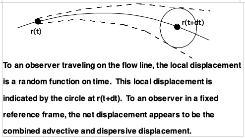

Discrete Particle Random Walk (Future Semester)¶
The model evolved from the Discrete Particle Random Walk Method of Modeling Mass Transport which is discussed below.
Modeling a physio-chemical system may be accomplished by two methods:
Model-equation approach;
Describe the system with a mathematical equation and boundary conditions - then solve the equation.
Direct-Simulation approach;
Define numerical structures that represent physical structures in the system, allow these representations to react and interact as determined by physical driving forces in the system.
Terminology
Advection, dispersion, reaction for i-th component:
= div(Dgrad(C)) + div(-C) + r
= instantaneous rate of change of mass density (C) of species i at a point in space at a given instant in time.
div(Dgrad(C)) = dispersive term - (relative flux) - the change in mass density at a point in the system due to hydrodynamic dispersion and molecular diffusion.
Molecular diffusion is caused by the random motion of molecules when a concentration gradient is present.
Hydrodynamic dispersion is caused by an irregular flow field due to the tortuous pore structure and other heterogenities in a subsurface flow system.
div(-C) = advective term - the change in mass density at a point due to gross movement of the fluid in which the i-th species is transported.
If q is constant in time, the flow field is said to be steady.
If q is constant in space, the flow field is said to be uniform.
r= source/sink, reactive, or non-conservative term.
It represents all internal processes that tend to change the net amount of species i present in a control volume.
It includes recharge, withdrawal, radioactive decay, biological degredation, and chemical reaction.
When ris zero (except for injection or extraction) species i is said to be conservative.
Typically the following simplifying assumptions are made to find solutions:
(1) The effect of changing atmospheric pressure is negligible with respect to long term flow patterns.
(2) Advection patterns (flow field) are not dependent on the chemical composition or temperature of the solution. (Isothermal, dilute system).
(3) Because of similar random nature, dispersion and molecular diffusion are often included together in an overall dispersion process that is assumed to be governed by Fick’s law:
= D grad (C).
Assumes an ideal solution where only binary molecular interactions are significant.
Usually resolution of flow patterns at a small scale (<1m) is impractical.
In surface water systems, the small scale unresolved motion is called turbulence.
In ground water systems, the analogous small-scale unresolved motion is called dispersion.
Dispersion is caused because the network of interconnected passages causes a division an re-division of a fluid mass as it flows.
Larger scale variations in lithology which cause changes and direction of groundwater flow also contribute to the effect we observe as dispersion.
The first cause is called micro-dispersion. The second cause is called macro-dispersion.
In regional scale modeling macro-dispersion is considerably more important than micro-dispersion - it is often inferred solely by geologic description.
These two mechanisms achieve the same result as molecular diffusion but more rapidly.
The tortuous movement of a fluid through soil can be thought of as a random sampling of possible flow paths (hydrodynamic chromatography) in a manner similar to brownian motion.
(4) Dispersion is assumed to be isotropic in longitudinal and transverse directions to flow at a point (this assumption simplifies the dispersion tensor).
(5) aand aare assumed to be geometric properties of the medium. This assumption implies that dispersion is a function of the matrix structure and not each species (diffusion will still depend on species type)
(6) The host fluid is assumed to be incompressible (usually valid for saturated groundwater systems).
(7) The total mass density of the components is assumed to be relatively constant.
(8) r= f
Typically it is assumed that most groundwater systems are at or near chemical equilibrium at all times.
This assumption greatly simplifies f but it is probably not valid in most reactive systems.
Coupling transport, chemical kinetics, and thermodynamic equilibrium models is an area of on-going research and it will be many years before these tools are routinely used in engineering studies.
These assumptions can be relaxed - the numerical structures become more cumbersome, but otherwise they present few difficulties for modeling.
Direct Simulation Analogs
Particles of mass - the first step in direct simulation is to define a numerical construct to represent the system.
In engineering we usually view chemical solutions as a continuum defined in a Eulerian system.
It is also useful to view material systems as being comprised of a large number of discrete particles of matter. At the molecular level (kinetic theory) this concept has been established as a reliable model of matter.
In the DPRW model it is assumed that the material dissolved or suspended in the subsurface water can be represented as an ensemble of a finite number of discrete particles of matter.
Assume that the water mass carrying the material is a continuum subject only to laminar flow (Darcy’s law). All particles move with the continuum at its velocity.
Each particle has the following attributes: position, mass, species type, charge, etc.
Each particle occupies zero volume, and can move independent of each other.
Because the particles have relatively large mass, the motion of the particles is assumed to be governed by Newtonian rather than relativistic mechanics.
Combining these assumptions into a set of numerical rules is the next step in the DPRW model - rules for advection, dispersion, mass decay, and boundaries must be established - then an efficient bookkeeping scheme and some ancillary structures complete the model.
DPRW - Advective Transport
The flow properties of the host medium are assumed to be unaffected by the number and type of particles present.
This assumption is analogous with decoupling momentum and mass balances - valid for dilute solutions.
==> Advective motion of each particle is only a function of the physical properties of the carrier and the geometry of the system.
Flow properties are represented by an array of velocity components: V(x,y,z,t) =
Typically each particle is allowed to be moved by the host fluid over a period Dt.
DPRW - Dispersive Transport
The particles of mass are subject to various mechanisms which are assumed to cause random, statistically independent displacements.
==> Particles disperse in a random walk process that is roughly analogous to brownian motion.
Determining the resulting probability distribution will give the model of the process:
